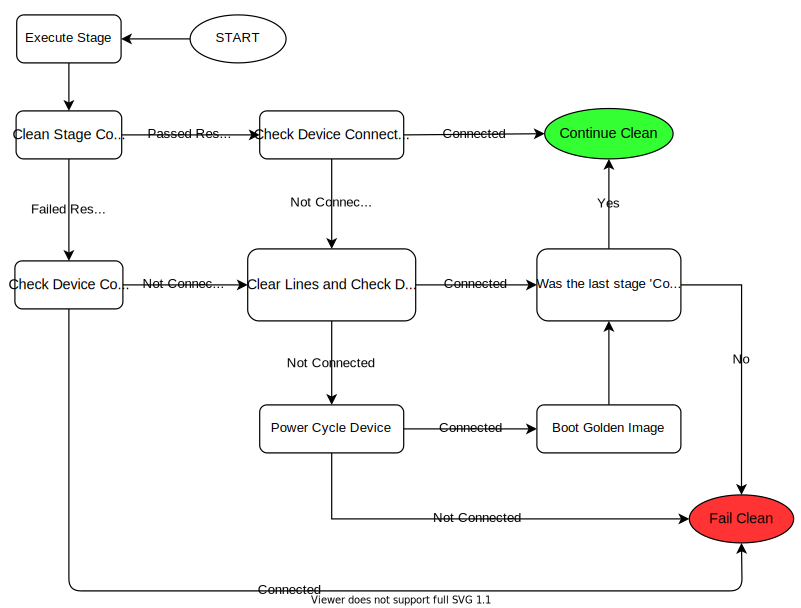

Device Recovery
Before using your new Clean it is important to learn about Device Recovery as it is the second most important aspect to
pyATS Clean.
Topics covered in this section are:
The Methodology Behind Device Recovery
pyATS Clean provides a jack-of-all-trades for recovering devices that fail due to device malfunctions or if the clean
process itself fails to execute (see below for details). Device Recovery can clear the line of a device from the terminal server
and use a powercycler to restart the device. After restarting the device, Device Recovery will load the golden image
and optionally apply a configuration onto the device.
The major advantage the device recovery feature provides is—you can recover a device and reset it back to a useable state regardless of the current state of the device.
How Device Recovery Works
Device Recovery is invoked after every stage and it will determine whether to continue or fail clean.
This may depend on:
The result of the last executed stage.
The connectivity to the device.
If the last stage ran was the
connectstage.
The following diagram explains, in detail, the flow of Device Recovery.
How to Enable Device Recovery
Device Recovery requires that you have an Golden Image for each device which is guaranteed to boot and function
correctly. This Golden Image can be kept on the device or on a tftp server which is accessible from the device. Once
you have the Golden Image, follow the steps below.
Add the required
Terminal Serverand/orPower Cyclerinformation to theTestbed YAMLThe example below shows where to add the
Terminal Serverand thePower Cyclerinformation.Note
See Supported Power Cyclers for a list of available Power Cyclers and their respective arguments that can be used.
1devices: 2 PE1: 3 peripherals: 4 power_cycler: 5 - type: dualcomm 6 connect_type: snmp 7 host: 127.0.0.1 8 outlets: [22] 9 10 terminal_server: 11 # <terminal server device>: <list of lines for the device> 12 # In this case, clearing line 22 would clear the line 13 # connected to 'PE1' 14 my-terminal-server: [22] 15 16 my-terminal-server: 17 # Fill out the rest of this device as normal 18 # such as connection info, credentials, etc
Add the
device_recoverysection to theClean YAML.Below you can find the
Device Recoveryschema.1Clean YAML - Device Recovery Schema 2----------------------------------- 3devices: 4 <device>: 5 device_recovery: 6 break_count (int): How many attempts to break the booting process once 7 either the console_activity_pattern or the grub_activity_pattern was 8 matched. 9 10 console_activity_pattern (str, optional): Used only for devices with 11 rommon boot mode. Once the pattern is matched, breaking of the 12 boot process begins. 13 14 console_breakboot_char (str, optional): Used in conjunction with 15 console_activity_pattern. This is the character(s) to send which should 16 break the rommon booting process. 17 18 grub_activity_pattern (str, optional): Used only for devices with 19 grub boot mode. Once the pattern is matched, breaking of the 20 boot process begins. 21 22 grub_breakboot_char (str, optional): Used in conjunction with 23 grub_activity_pattern. This is the character(s) to send which should 24 break the grub booting process. 25 26 timeout (int): Maximum time in seconds to recover the device. 27 28 recovery_password (str): Password to login to the device after the boot 29 process completes. 30 31 powercycler (bool, optional): Should Device Recovery powercycle 32 the device. Defaults to True. 33 34 powercycler_delay (int, optional): Powercycler delay between on and off in 35 seconds. Defaults to 30. 36 37 reconnect_delay (int, optional): Once device recovered, delay before 38 final reconnect in seconds. Defaults to 60. 39 40 clear_line (bool, optional): Should device recovery clear the lines. 41 Defaults to True. 42 43 post_recovery_configuration (str, optional): Configuration to apply after 44 booting. Defaults to None. 45 46 golden_image for NXOS 47 --------------------- 48 golden_image (dict, only if 'tftp_boot' from below is not defined): 49 kickstart (str, optional): Golden kickstart image. Defaults to None. 50 system (str, optional): Golden system image. Defaults to None. 51 52 golden_image for others 53 ----------------------- 54 golden_image (list, only if 'tftp_boot' from below is not defined): Image 55 to boot. 56 57 tftp_boot (only if 'golden_image' from above is not defined): 58 image (list): Image to boot with. 59 ip_address (list): Management ip address to configure to reach to 60 the TFTP server. 61 subnet_mask (str): Management subnet mask. 62 gateway (str): Management gateway. 63 tftp_server (str): Tftp server is reachable with management interface.
Below you can find a
Device Recoveryexample.1Clean YAML - Device Recovery Example 2------------------------------------ 3devices: 4 PE1: 5 device_recovery: 6 grub_activity_pattern: '.*The highlighted entry will be executed automatically in.*' 7 timeout: 600 8 powercycler_delay: 5 9 golden_image: 10 - 'GOLDEN IMAGE'
That’s it! Not as bad as it looked! Now pyATS Clean will handle cases where the device has malfunctioned or is otherwise
unreachable.